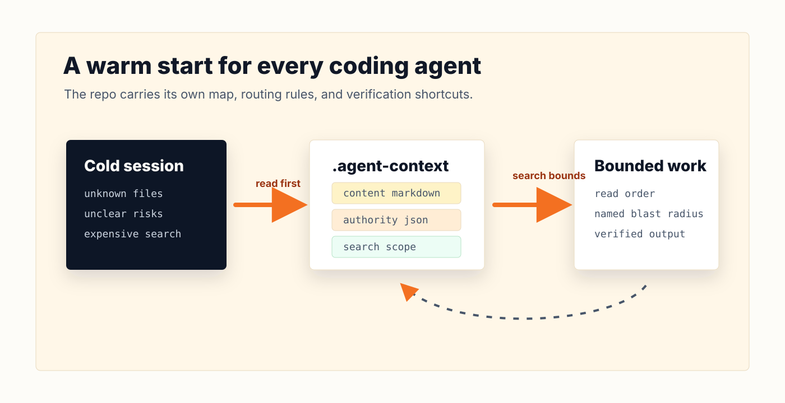
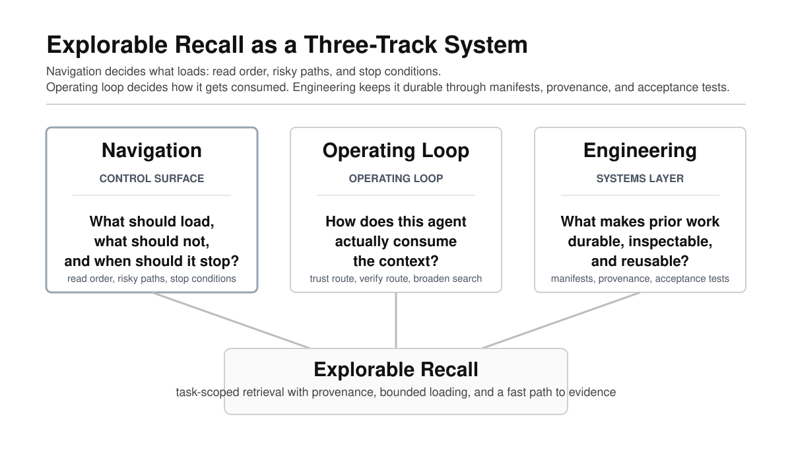
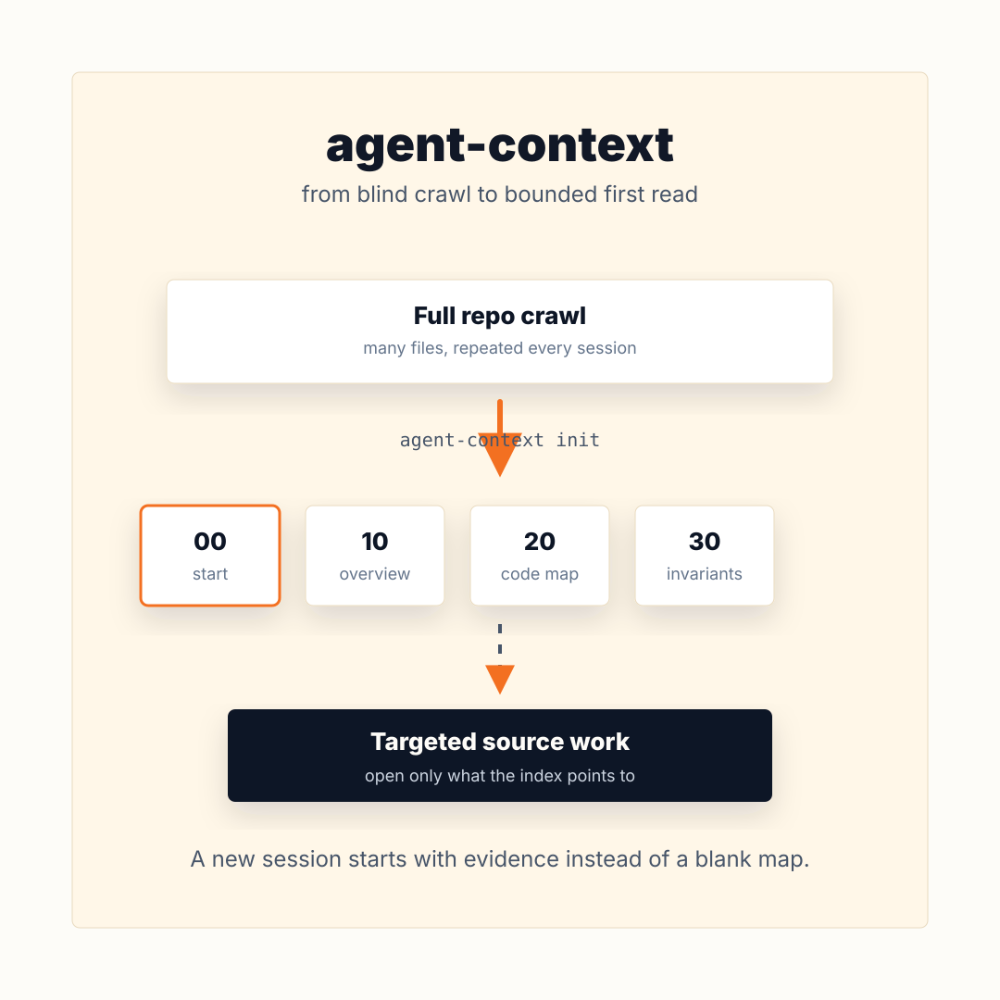
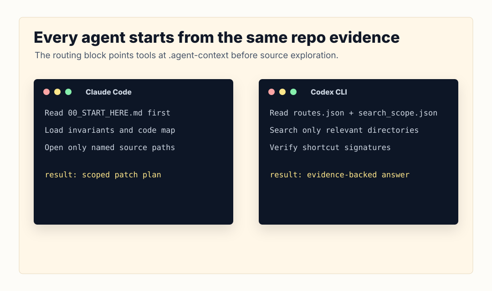

agent-context
A repo evidence standard for coding agents
Make context portable, reviewable, fresh, and testable before the agent edits.
A concrete workflow for Cursor, Claude, Codex, Gemini, and OpenCode.
Cursor Meetup · May 2026
github.com/cote-star/agent-context
1 / 19The agent is new here every time
Most coding agents enter a repo as a bright visitor with no durable map.
- They rediscover the tree.
- They infer ownership from whatever file they open first.
- They miss the invariant that decides whether an answer is safe.
- They repeat the same exploration in the next session, editor, or model.
The failure is often not intelligence. It is missing repo evidence.

Thesis: every serious repo needs a navigation layer
We already check in tests, docs, schemas, CI, runbooks, and migration history.
Agent context should be another checked-in repo artifact: the map of what is true, risky, connected, and out-of-bounds.
Portable
Works across agents because it is markdown and JSON, not vendor memory.
Reviewable
Lives in git. Teams can review context changes like code changes.
Fresh
Drift is a failing preflight, not a quiet footnote.
The standard is simple: read the repo map before editing the repo.
3 / 19Explorable recall has three tracks
The idea is bigger than a docs folder. A useful context layer has to coordinate navigation, operating loop, and engineering.

4 / 19The artifact: .agent-context/
A committed folder next to the code. No hosted service. No hidden memory. No editor lock-in.
Three pack layers
Content: overview, code map, invariants, operations.
Authority: routes, completeness contracts, reporting rules.
Navigation: search scope, exclusions, verification shortcuts.

The workflow teams can copy
agent-context init --tier 1 .
agent-context verify .
agent-context freshness . --base-ref origin/mainThat is the meetup takeaway: not a library trick, a repeatable operating loop.
6 / 19Demo: from empty repo to first-read contract
$ cd examples/hello-service
$ ~/agent-context/bin/agent-context init --tier 3 .
Initialized .agent-context/current/ with 11 files (tier 3)
Copied helper tools to .agent-context/tools/
Wrote routing block in CLAUDE.md
Wrote routing block in AGENTS.md
Wrote routing block in GEMINI.md
Wrote routing block in .cursorrulesThen ask the agent:
Set up agent context for this repo.
The agent fills the templates, writes acceptance tests, runs verify, and leaves a diff the team can review.
7 / 19What a reviewer actually checks
File families
Does the pack name every file family that must change together?
Negative guidance
Does it say which plausible files are deprecated, generated, or near-misses?
Silent failures
Does it call out the thing that can break without a compile error?

This is where the talk becomes concrete: the review target is the context diff, not the model's private memory.
8 / 19How to test whether it works
The methodology is deliberately boring:
| Protocol piece | Why it matters |
|---|---|
Bare clone vs structured_fresh clone | Same repo, same task, only the context layer changes. |
| Hard multi-hop tasks | Lookup tasks prove little; synthesis tasks expose wrong turns. |
| Grep-backed ground truth | Every expected file family is mechanically checkable. |
| Independent judge + human audit | Self-scores are evidence, not verdicts. |
If the pack is stale, the run fails before agents start.
9 / 19Evidence by agent
Different agents expose different telemetry. The clean read is agent-by-agent, not one blended scoreboard.
Claude
Available: files, tokens, reviewer grade.
Codex
Available: tokens, files, dead ends, risk flags.
Cursor
Available: files, dead ends, risk flags.
| Agent | Strongest available metric | Bare | With context |
|---|---|---|---|
| Claude | files opened / task | 6.3 | 1.9 |
| Codex | tokens / 6-task cell | 163K | 130K |
| Cursor | dead ends / task | 0.24 | 0.07 |
Each agent slide uses only the telemetry available for that agent. No unfinished lanes are included.
10 / 19Claude evidence
Claude showed the strongest navigation compression: it followed the context contract and opened far fewer files.
Files opened / task
Tokens / task
Best use case
Impact analysis where the completeness contract names every file family and silent failure mode.
Metric source: reviewer-graded Claude run set.
11 / 19Codex evidence
Codex still verifies aggressively, but context reduced token load and cut self-reported risk flags.
Tokens / 6-task cell
Risk flags
Files opened / task
Codex is a search-and-verify agent: the pack mostly reduces search breadth and risk, not verification behavior.
12 / 19Cursor evidence
Cursor's strongest signal was operational: fewer dead ends and fewer files opened with the same task set.
Dead ends / task
Files opened / task
Risk flags
Token telemetry is not available for Cursor in this harness, so the Cursor slide does not claim token savings.
13 / 19Lessons learned the hard way
| Lesson | Operational rule |
|---|---|
| Stale context can make a good agent worse. | Freshness is a hard experiment gate. |
| Easy tasks create fake confidence. | Use multi-hop tasks with near-misses and “do not touch” clauses. |
| Self-scores are unreliable. | Judge independently; audit before public claims. |
| Different agents read differently. | Design for trust-and-follow and search-and-verify paths. |
This is why the methodology matters as much as the folder.
14 / 19Tradeoffs, not magic
- Maintenance cost: the pack must change when relevant code changes.
- Overfitting risk: packs should route and bound search, not quote every answer.
- Repo-size fit: small repos may only need tier 1.
- Telemetry gaps: Cursor and local models expose different metrics than CLI agents.
- Human review remains: context improves first drafts; it does not replace code review.
The bargain: spend a little repo-maintenance effort to stop every agent from rediscovering the same map.
15 / 19Try this on one repo tomorrow
That is enough to decide whether the repo needs the full tier 3 pack.
16 / 19The first command
git clone https://github.com/cote-star/agent-context.git ~/agent-context
cd /path/to/your-repo
~/agent-context/bin/agent-context init --tier 1 .Or open the repo in your agent of choice and ask:
Set up agent context for this repo.
Start small. Promote to tier 3 when the repo has cross-cutting invariants, duplicated architecture, or production-risk workflows.
Make repo knowledge explicit before asking agents to change it.
github.com/cote-star/agent-context
17 / 19The operating claim
agent-context does not make agents omniscient.
It makes repo knowledge explicit enough that agents can start in the right neighborhood, humans can audit their routes, and stale context can fail before it misleads anyone.
That is the standard worth adopting: context as a checked-in interface between repos and agents.
18 / 19Make context part of the repo
Not a prompt trick. Not a vendor feature. A checked-in standard teams can review.
init · verify · freshness · bare vs structured_fresh
github.com/cote-star/agent-context
19 / 19